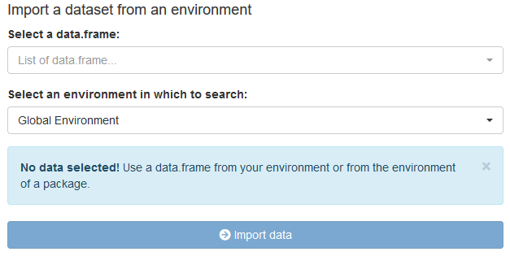
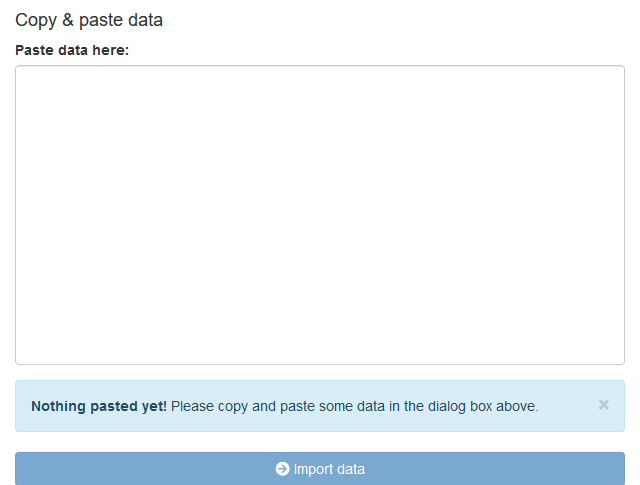
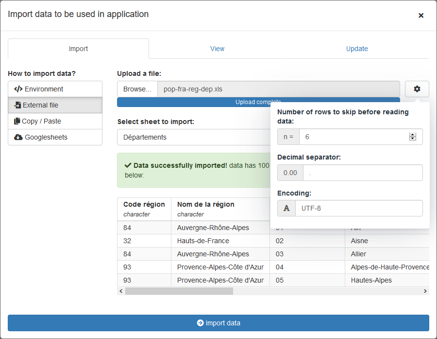
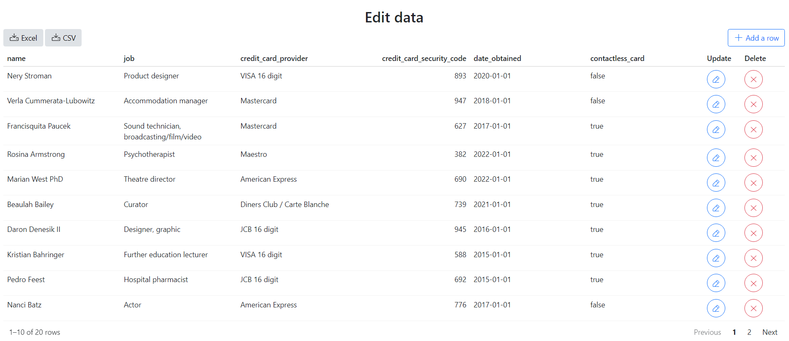

The {datamods} package contains modules to work with data in Shiny application, currently the following modules are implemented :
- Import modules : import data from various sources
- Update table structure: select columns to keep, rename variable and convert from a class to anoter (e.g. numeric to character)
- Filter data : interactively filter a
data.frame - Validate : check that data respect some expectations (with package {validate})
- Sample data: interactively sample a
data.frame.
Import
From environment
Imports data from the user’s global environment or a package environment to retrieve included in it. It searches for data sets in the global environment and lets the user choose the data to use.
# UI
import_globalenv_ui("myid")
# Server
imported <- import_globalenv_server("myid")
From file
Imports data from an external file. The file can be of any format, csv, xlsx, tsv etc.. Import is performed by package rio. In case of Excel files, it gives an option to choose the sheet.
# UI
import_file_ui("myid")
# Server
imported <- import_file_server("myid")
From clipboard
Imports data via copy/paste. Simply copy and paste data from any source.
# UI
import_copypaste_ui("myid")
# Server
imported <- import_copypaste_server("myid")
From Googlesheet
Imports data from a Googlesheet. Use the shareable link to read data.
# UI
import_googlesheets_ui("myid")
# Server
imported <- import_googlesheets_server("myid")
From URL
Imports data from a URL. Only flat data in any format supported by package rio.
# UI
import_url_ui("myid")
# Server
imported <- import_url_server("myid")Usage
All modules are used in the same way in a Shiny application, here is an example:
library(shiny)
library(datamods)
ui <- fluidPage(
tags$h3("Import data with copy & paste"),
fluidRow(
column(
width = 4,
import_copypaste_ui("myid")
),
column(
width = 8,
tags$b("Imported data:"),
verbatimTextOutput(outputId = "status"),
verbatimTextOutput(outputId = "data")
)
)
)
server <- function(input, output, session) {
imported <- import_copypaste_server("myid")
output$status <- renderPrint({
imported$status()
})
output$data <- renderPrint({
imported$data()
})
}
shinyApp(ui, server) All modules have the same return value server-side, a
list with three slots:
-
status: a
reactivefunction returning the status:NULL,errororsuccess. -
name: a
reactivefunction returning the name of the imported data ascharacter. -
data: a
reactivefunction returning the importeddata.frame.
Modal Window
All modules can be launched at once in a modal window:

Launch the modal server-side with:
observeEvent(input$launch_modal, {
import_modal(
id = "myid",
title = "Import data to be used in application"
)
})See ?import_modal for a complete example.
Update Modules
This module allow to dynamically select, rename and convert variables of a dataset.

Some options for converting to date and numeric are available in a dropdown menu.
Return value of the module is a reactive function with
the update data.
Validate
When importing data into an application it can be useful to check that data respect some expectations: number of rows/columns, existence of a variable, … This module allow to validate rules defined with package validate.
# UI
validation_ui("validation", display = "inline")
# Server
results <- validation_server(
id = "validation",
data = dataset,
n_row = ~ . > 20, # more than 20 rows
n_col = ~ . >= 3, # at least 3 columns
rules = myrules
)
# Rules are defined as follow:
myrules <- validator(
is.character(Manufacturer) | is.factor(Manufacturer),
is.numeric(Price),
Price > 12, # we should use 0 for testing positivity, but that's for the example
!is.na(Luggage.room),
in_range(Cylinders, min = 4, max = 8),
Man.trans.avail %in% c("Yes", "No")
)
# Add some labels
label(myrules) <- c(
"Variable Manufacturer must be character",
"Variable Price must be numeric",
"Variable Price must be strictly positive",
"Luggage.room must not contain any missing values",
"Cylinders must be between 4 and 8",
"Man.trans.avail must be 'Yes' or 'No'"
)
# you can also add a description()
Validation results can be displayed in a dropdown menu (above left) or inline where the module is called.
The return value server-side is a list with the following items:
- status: a reactive function returning the best status available between “OK”, “Failed” or “Error”.
- details: a reactive function returning a list with validation details.
Filter
Interactively filter a data.frame and generate code to
reproduce filters applied:
# UI
filter_data_ui("filtering", max_height = "500px")
# Server
res_filter <- filter_data_server(
id = "filtering",
data = reactive(mtcars),
name = reactive("mtcars"),
vars = reactive(names(mtcars)),
widget_num = "slider",
widget_date = "slider",
label_na = "Missing"
)You can select variables for which to create a filter and choose widgets used to create the UI filter.

The return value server-side is a list with the following items:
-
filtered: a
reactivefunction returning the data filtered. -
code: a
reactivefunction returning the dplyr pipeline to filter data. -
expr: a
reactivefunction returning an expression to filter data.
Sample
Interactively sample a data.frame to keep only part of
the data, depending on the number or proportion of rows to keep.
# UI
sample_ui("myID")
# Server
result_sample <- sample_server("myID", reactive(iris))
Edit
Interactively edit a data.frame, this module also allow
to :
- adding, deleting and modifying rows
- choosing editable columns and choosing mandatory columns
- exporting data (csv and Excel)
# UI
edit_data_ui(id = "id")
# Server
res_edited <- edit_data_server(
id = "id",
data_r = reactive(demo_edit),
add = TRUE,
update = TRUE,
delete = TRUE,
download_csv = TRUE,
download_excel = TRUE,
file_name_export = "datas",
var_edit = c("name", "job", "credit_card_provider", "credit_card_security_code"),
var_mandatory = c("name", "job")
)
This module returns the edited table with the user modifications. See ?demo_edit to see the data created for this data edit example.